library(tidyverse)
library(here)
library(janitor)
library(ggrepel)
library(ghibli)
library(gt)
library(patchwork)
library(RColorBrewer)
library(car) # ANOVA package
library(ggeffects)
library(effects) #dependency for ggeffects
library(ggResidpanel) #residual panel
library(lme4)
library(lmerTest)
library(sjPlot)
#library(GGally)
library(emmeans)
library(performance)MOBEAST fDOM V2
Load Libraries
Data visualization theme
nunu_theme <- theme_bw() +
theme(plot.title = element_text(size=14, face = "bold"),
plot.subtitle = element_text(size=12),
axis.title = element_text(size = 12, face = "bold"),
axis.text = element_text(size = 12),
strip.text.x = element_text(size = 12, face = "bold"),
legend.title=element_text(size=12, face = "bold"),
legend.text=element_text(size=12),
axis.text.x = element_text(angle= 45, hjust= 1),
panel.background = element_rect(fill = "azure1"))Load Data
fDOM <- read_csv(here("data", "fDOM", "fDOM_sorted.csv"))
fDOM <- fDOM %>% mutate(treatment = ifelse(treatment == "Rubble", "CCA", treatment)) %>%
select(-sample_type)
table_id <- read_csv(here("data", "Laurel", "TableID.csv"))Data Clean-Up
fDOM_desc <- tibble(fdom = c("coble_a","coble_b","coble_c","coble_m","coble_t",
"m_to_c","bix","hix","fpeak","fi",
"lignin"),
fdom_alt_name = c("UV-Humic","Tyrosine","Visible-Humic","Marine Humic","Tryptophan",
"m_to_c","bix","hix","Phenylalanine","Fluvic Acid",
"lignin"),
fdom_cat= c("Humic","Proteinaceous","Humic","Humic","Proteinaceous",
"Humic","Humic","Humic","Proteinaceous","Humic",
"Other"))
fDOM_desc %>% gt()| fdom | fdom_alt_name | fdom_cat |
|---|---|---|
| coble_a | UV-Humic | Humic |
| coble_b | Tyrosine | Proteinaceous |
| coble_c | Visible-Humic | Humic |
| coble_m | Marine Humic | Humic |
| coble_t | Tryptophan | Proteinaceous |
| m_to_c | m_to_c | Humic |
| bix | bix | Humic |
| hix | hix | Humic |
| fpeak | Phenylalanine | Proteinaceous |
| fi | Fluvic Acid | Humic |
| lignin | lignin | Other |
table_id <- clean_names(table_id)
table_id <- table_id %>% rename(tank_number=tankid) %>% select(-treatment) %>%
mutate(tank_number = paste0("T", tank_number)) %>%
mutate(inflow_table = paste("Table", inflow_table))
fDOM <- left_join(fDOM, table_id, by= "tank_number")fDOM <- fDOM %>% mutate(inflow_table = ifelse(is.na(inflow_table), tank_number, inflow_table)) %>%
mutate(inflow_table = ifelse(inflow_table == "F1", "Table 1",
ifelse(inflow_table == "F2", "Table 2", inflow_table))) %>%
mutate(inflow_table = factor(inflow_table),
tank_number = factor(tank_number)) %>%
relocate(inflow_table, .after = "treatment")fDOM_long <- fDOM %>% pivot_longer(cols = coble_a:lignin,
names_to = "fdom",
values_to = "fdom_conc")fdom_long <- left_join(fDOM_long, fDOM_desc, by = "fdom")fDOM_norm <- fdom_long %>% filter(date > as.Date("2024-05-31")) %>% # Removes end members
filter(treatment != "Rain") %>%
mutate(date_time = factor(ymd_hms(paste(date, time)))) %>%
group_by(date_time, inflow_table, fdom) %>%
mutate(inflow= fdom_conc[treatment == "Inflow"]) %>% # Isolate inflow for each date_time and table
ungroup() %>%
#group_by(date_time) %>%
#mutate(inflow = ifelse(is.na(inflow),
# inflow[!is.na(inflow)][1], # get the other table's value for that date
# inflow)) %>%
#ungroup() %>%
mutate(fdom_conc_norm = fdom_conc - inflow) %>% # Normalize for treatments
relocate(inflow, .after = "fdom_conc_norm") %>%
relocate(date_time, .before = "date") %>%
mutate(treatment = factor(treatment, levels = c("Control", "Coral", "CCA", "Algae", "Inflow")))
head(fDOM_norm, 15)# A tibble: 15 × 14
id_number long_name tank_number treatment inflow_table date_time date
<chr> <chr> <fct> <fct> <fct> <fct> <date>
1 MOBEAST001 MOBEAST_F… F1 Inflow Table 1 2024-06-… 2024-06-02
2 MOBEAST001 MOBEAST_F… F1 Inflow Table 1 2024-06-… 2024-06-02
3 MOBEAST001 MOBEAST_F… F1 Inflow Table 1 2024-06-… 2024-06-02
4 MOBEAST001 MOBEAST_F… F1 Inflow Table 1 2024-06-… 2024-06-02
5 MOBEAST001 MOBEAST_F… F1 Inflow Table 1 2024-06-… 2024-06-02
6 MOBEAST001 MOBEAST_F… F1 Inflow Table 1 2024-06-… 2024-06-02
7 MOBEAST001 MOBEAST_F… F1 Inflow Table 1 2024-06-… 2024-06-02
8 MOBEAST001 MOBEAST_F… F1 Inflow Table 1 2024-06-… 2024-06-02
9 MOBEAST001 MOBEAST_F… F1 Inflow Table 1 2024-06-… 2024-06-02
10 MOBEAST001 MOBEAST_F… F1 Inflow Table 1 2024-06-… 2024-06-02
11 MOBEAST001 MOBEAST_F… F1 Inflow Table 1 2024-06-… 2024-06-02
12 MOBEAST002 MOBEAST_F… F2 Inflow Table 2 2024-06-… 2024-06-02
13 MOBEAST002 MOBEAST_F… F2 Inflow Table 2 2024-06-… 2024-06-02
14 MOBEAST002 MOBEAST_F… F2 Inflow Table 2 2024-06-… 2024-06-02
15 MOBEAST002 MOBEAST_F… F2 Inflow Table 2 2024-06-… 2024-06-02
# ℹ 7 more variables: time <time>, fdom <chr>, fdom_conc <dbl>,
# fdom_alt_name <chr>, fdom_cat <chr>, fdom_conc_norm <dbl>, inflow <dbl>ggplot(fDOM_norm, aes(x= treatment, y = fdom_conc, fill = fdom))+
geom_bar(position="stack", stat="identity")+
facet_grid(fdom_cat~date, scales = "free")+
nunu_theme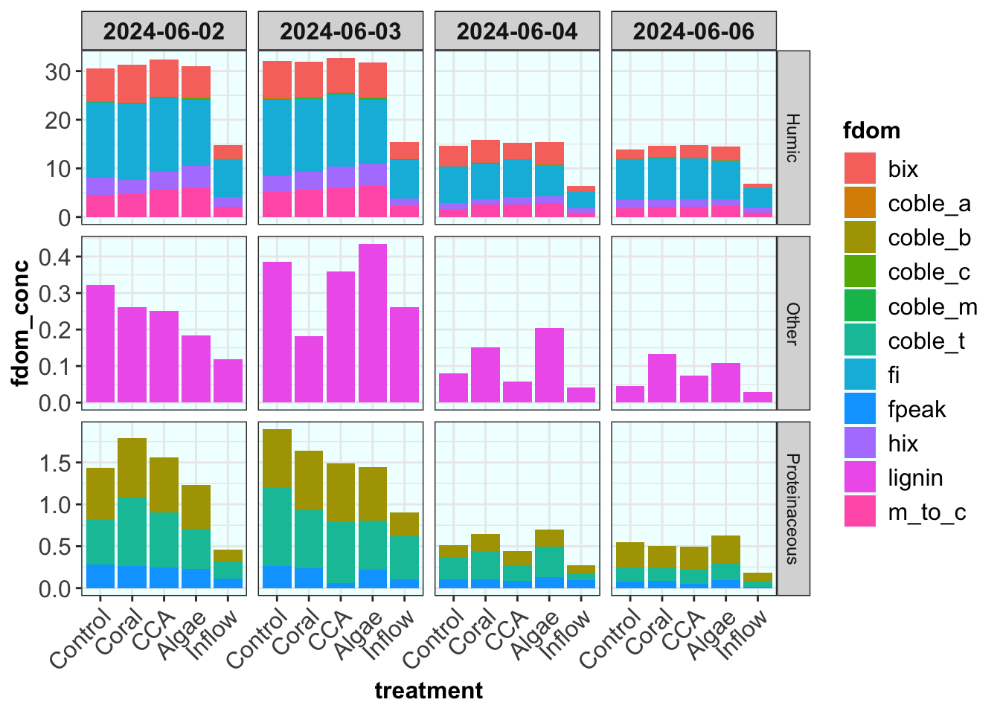
fDOM_norm %>% filter(fdom_cat != "Other") %>%
ggplot(aes(x= treatment, y = fdom_conc, fill = fdom))+
geom_boxplot()+
facet_grid(fdom_cat~date, scales = "free")+
nunu_theme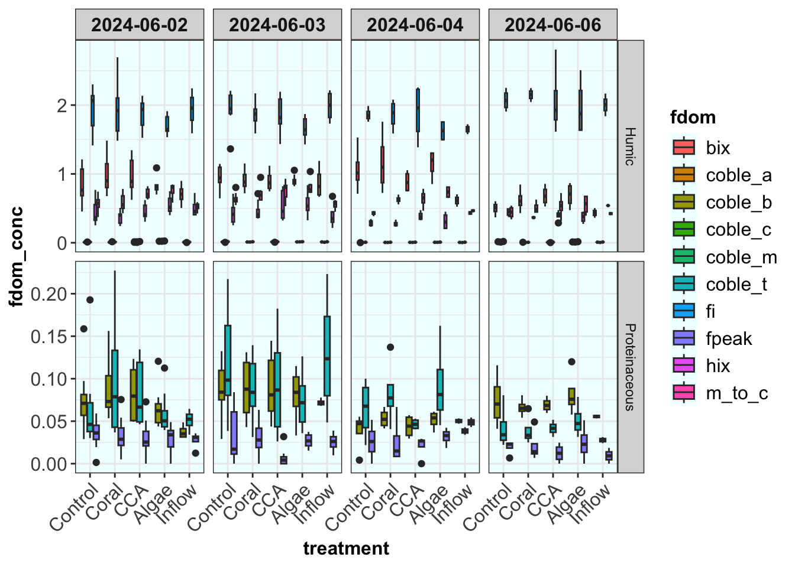
fDOM_norm %>% mutate(fdom_cat = factor(fdom_cat, levels = c("Humic", "Proteinaceous", "Other"))) %>%
group_by(fdom_cat,fdom) %>%
summarize(min = round(min(fdom_conc, na.rm = T),3),
avg = round(mean(fdom_conc, na.rm = T),3),
max = round(max(fdom_conc, na.rm = T),3)) %>%
ungroup() %>%
gt()| fdom_cat | fdom | min | avg | max |
|---|---|---|---|---|
| Humic | bix | 0.364 | 0.868 | 1.758 |
| Humic | coble_a | 0.002 | 0.009 | 0.022 |
| Humic | coble_c | 0.001 | 0.008 | 0.022 |
| Humic | coble_m | 0.003 | 0.012 | 0.026 |
| Humic | fi | 1.364 | 1.881 | 2.806 |
| Humic | hix | 0.197 | 0.439 | 0.838 |
| Humic | m_to_c | 0.318 | 0.633 | 1.035 |
| Proteinaceous | coble_b | 0.004 | 0.073 | 0.159 |
| Proteinaceous | coble_t | 0.022 | 0.075 | 0.227 |
| Proteinaceous | fpeak | 0.000 | 0.026 | 0.084 |
| Other | lignin | 0.000 | 0.034 | 0.132 |
Hypothesis 1: fDOM 12PM
fDOM_12PM <- fDOM_norm %>% filter(treatment != "Inflow") %>%
filter(time == hms("12:00:00")) %>%
filter(fdom_cat != "Other")Humic
CobleA
fDOM_12PM_cobA <- fDOM_12PM %>% filter(fdom == "coble_a") mod <- lmer(fdom_conc ~ treatment + (1|date)+ (1|inflow_table/tank_number), data = fDOM_12PM_cobA)
summary(mod)Linear mixed model fit by REML. t-tests use Satterthwaite's method [
lmerModLmerTest]
Formula: fdom_conc ~ treatment + (1 | date) + (1 | inflow_table/tank_number)
Data: fDOM_12PM_cobA
REML criterion at convergence: -374.6
Scaled residuals:
Min 1Q Median 3Q Max
-1.2719 -0.4910 -0.1244 0.2281 4.0249
Random effects:
Groups Name Variance Std.Dev.
tank_number:inflow_table (Intercept) 0.000e+00 0.000000
date (Intercept) 1.850e-06 0.001360
inflow_table (Intercept) 4.277e-07 0.000654
Residual 8.629e-06 0.002937
Number of obs: 48, groups:
tank_number:inflow_table, 16; date, 3; inflow_table, 2
Fixed effects:
Estimate Std. Error df t value Pr(>|t|)
(Intercept) 0.0067071 0.0012553 4.7988821 5.343 0.00348 **
treatmentCoral -0.0007835 0.0012101 41.9208582 -0.647 0.52086
treatmentCCA 0.0008363 0.0012101 41.9208582 0.691 0.49332
treatmentAlgae 0.0018472 0.0011992 40.9999940 1.540 0.13116
---
Signif. codes: 0 '***' 0.001 '**' 0.01 '*' 0.05 '.' 0.1 ' ' 1
Correlation of Fixed Effects:
(Intr) trtmnC trtCCA
treatmntCrl -0.491
treatmntCCA -0.491 0.509
treatmntAlg -0.478 0.496 0.496
optimizer (nloptwrap) convergence code: 0 (OK)
boundary (singular) fit: see help('isSingular')plot_model(mod, type = "re")[[1]] +
plot_model(mod, type = "re")[[2]] +
plot_model(mod, type = "eff", terms = c('treatment')) +
plot_model(mod, type = "diag")[[1]]resid_panel(mod)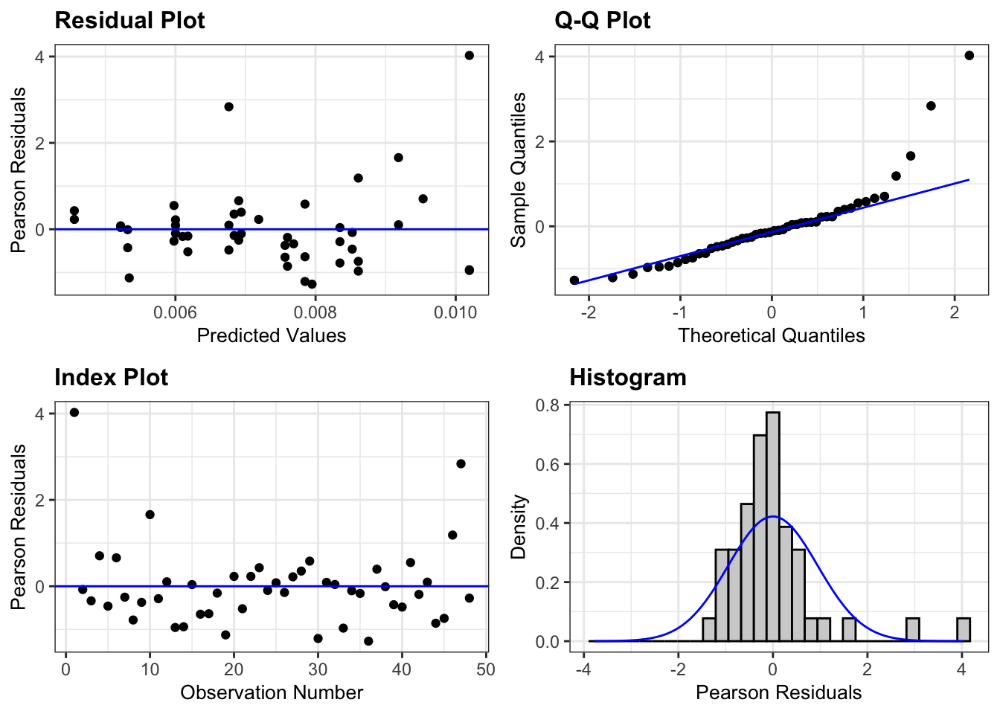
emmeans(mod, specs = trt.vs.ctrl ~ treatment)$emmeans
treatment emmean SE df lower.CL upper.CL
Control 0.00671 0.00130 4.60 0.00328 0.0101
Coral 0.00592 0.00124 4.64 0.00265 0.0092
CCA 0.00754 0.00124 4.64 0.00427 0.0108
Algae 0.00855 0.00130 4.60 0.00513 0.0120
Degrees-of-freedom method: kenward-roger
Confidence level used: 0.95
$contrasts
contrast estimate SE df t.ratio p.value
Coral - Control -0.000783 0.00125 11.3 -0.624 0.8418
CCA - Control 0.000836 0.00125 11.3 0.667 0.8207
Algae - Control 0.001847 0.00120 11.0 1.540 0.3371
Degrees-of-freedom method: kenward-roger
P value adjustment: dunnettx method for 3 tests emmeans(mod, specs = ~ treatment) treatment emmean SE df lower.CL upper.CL
Control 0.00671 0.00130 4.60 0.00328 0.0101
Coral 0.00592 0.00124 4.64 0.00265 0.0092
CCA 0.00754 0.00124 4.64 0.00427 0.0108
Algae 0.00855 0.00130 4.60 0.00513 0.0120
Degrees-of-freedom method: kenward-roger
Confidence level used: 0.95 Interpretation
#sort(boxplot.stats(fDOM_12PM_cobA$fdom_conc)$out)
ggplot(fDOM_12PM_cobA, aes(x= treatment, y = fdom_conc, fill = fdom))+
geom_boxplot()+
geom_jitter(aes(color = treatment), alpha = 0.5)+
geom_text_repel(aes(label = tank_number), alpha = 0.4)+
facet_grid(fdom_cat~date, scales = "free")+
nunu_theme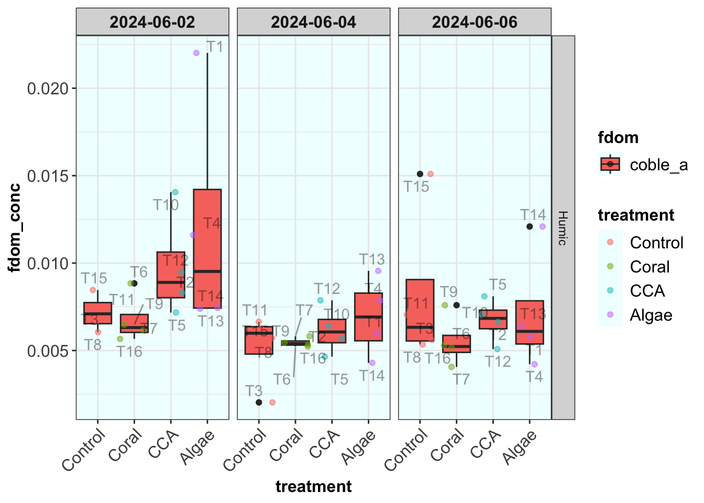
CobleM
fDOM_12PM_cobM <- fDOM_12PM %>% filter(fdom == "coble_m") mod <- lmer(fdom_conc ~ treatment + (1|date)+ (1|inflow_table/tank_number), data = fDOM_12PM_cobM)
summary(mod)Linear mixed model fit by REML. t-tests use Satterthwaite's method [
lmerModLmerTest]
Formula: fdom_conc ~ treatment + (1 | date) + (1 | inflow_table/tank_number)
Data: fDOM_12PM_cobM
REML criterion at convergence: -358.4
Scaled residuals:
Min 1Q Median 3Q Max
-1.3285 -0.5739 -0.1594 0.2656 3.7092
Random effects:
Groups Name Variance Std.Dev.
tank_number:inflow_table (Intercept) 0.000e+00 0.000000
date (Intercept) 3.193e-06 0.001787
inflow_table (Intercept) 5.213e-07 0.000722
Residual 1.239e-05 0.003520
Number of obs: 48, groups:
tank_number:inflow_table, 16; date, 3; inflow_table, 2
Fixed effects:
Estimate Std. Error df t value Pr(>|t|)
(Intercept) 0.0090049 0.0015467 4.6377837 5.822 0.00271 **
treatmentCoral -0.0008141 0.0014490 41.9519129 -0.562 0.57721
treatmentCCA 0.0008885 0.0014490 41.9519129 0.613 0.54308
treatmentAlgae 0.0016765 0.0014370 40.9999833 1.167 0.25008
---
Signif. codes: 0 '***' 0.001 '**' 0.01 '*' 0.05 '.' 0.1 ' ' 1
Correlation of Fixed Effects:
(Intr) trtmnC trtCCA
treatmntCrl -0.476
treatmntCCA -0.476 0.508
treatmntAlg -0.465 0.496 0.496
optimizer (nloptwrap) convergence code: 0 (OK)
boundary (singular) fit: see help('isSingular')plot_model(mod, type = "re")[[1]] +
plot_model(mod, type = "re")[[2]] +
plot_model(mod, type = "eff", terms = c('treatment')) +
plot_model(mod, type = "diag")[[1]]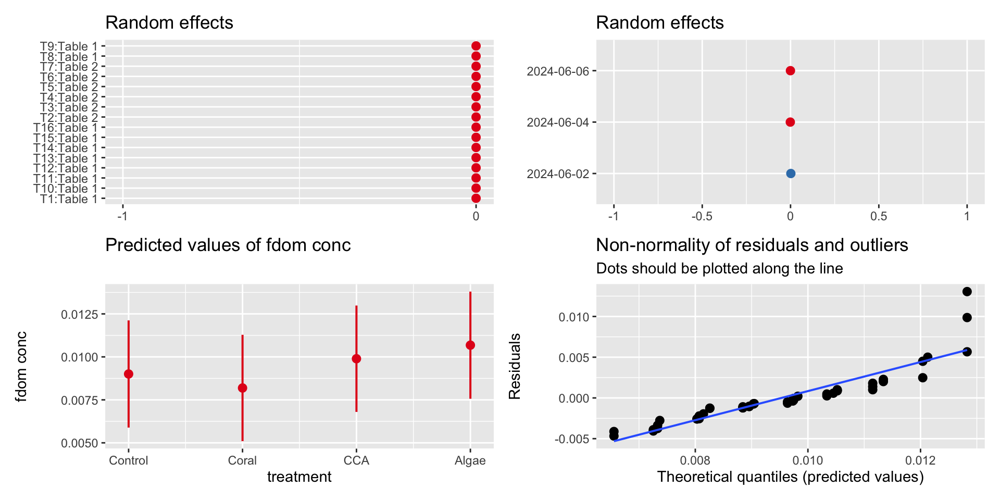
resid_panel(mod)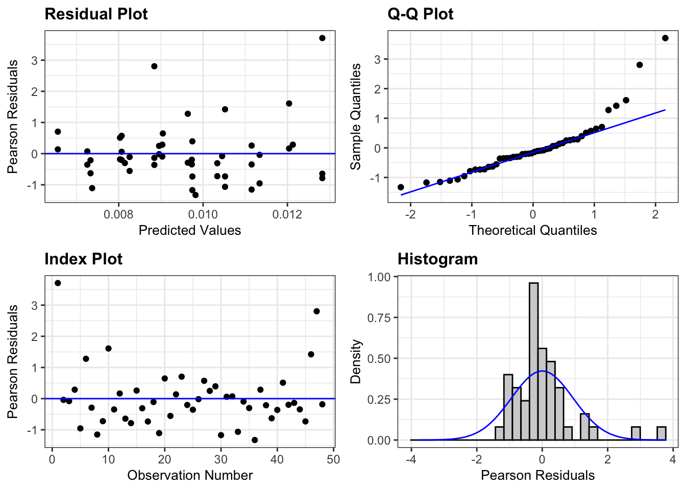
emmeans(mod, specs = trt.vs.ctrl ~ treatment)$emmeans
treatment emmean SE df lower.CL upper.CL
Control 0.00900 0.00160 4.47 0.00474 0.0133
Coral 0.00819 0.00154 4.50 0.00411 0.0123
CCA 0.00989 0.00154 4.50 0.00581 0.0140
Algae 0.01068 0.00160 4.47 0.00642 0.0149
Degrees-of-freedom method: kenward-roger
Confidence level used: 0.95
$contrasts
contrast estimate SE df t.ratio p.value
Coral - Control -0.000814 0.00151 11.4 -0.540 0.8808
CCA - Control 0.000888 0.00151 11.4 0.590 0.8585
Algae - Control 0.001677 0.00144 11.0 1.167 0.5332
Degrees-of-freedom method: kenward-roger
P value adjustment: dunnettx method for 3 tests emmeans(mod, specs = ~ treatment) treatment emmean SE df lower.CL upper.CL
Control 0.00900 0.00160 4.47 0.00474 0.0133
Coral 0.00819 0.00154 4.50 0.00411 0.0123
CCA 0.00989 0.00154 4.50 0.00581 0.0140
Algae 0.01068 0.00160 4.47 0.00642 0.0149
Degrees-of-freedom method: kenward-roger
Confidence level used: 0.95 #sort(boxplot.stats(fDOM_12PM_cobA$fdom_conc)$out)
ggplot(fDOM_12PM_cobM, aes(x= treatment, y = fdom_conc, fill = fdom))+
geom_boxplot()+
geom_jitter(aes(color = treatment), alpha = 0.5)+
geom_text_repel(aes(label = tank_number), alpha = 0.4)+
facet_grid(fdom_cat~date, scales = "free")+
nunu_theme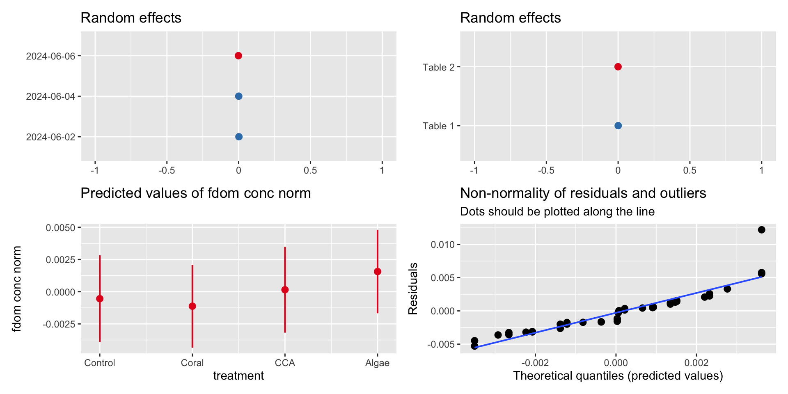
CobleC
fDOM_12PM_cobC <- fDOM_12PM %>% filter(fdom == "coble_c") mod <- lmer(fdom_conc ~ treatment + (1|date)+ (1|inflow_table/tank_number), data = fDOM_12PM_cobC)
summary(mod)Linear mixed model fit by REML. t-tests use Satterthwaite's method [
lmerModLmerTest]
Formula: fdom_conc ~ treatment + (1 | date) + (1 | inflow_table/tank_number)
Data: fDOM_12PM_cobC
REML criterion at convergence: -373.6
Scaled residuals:
Min 1Q Median 3Q Max
-1.2378 -0.4396 -0.0512 0.2272 4.3019
Random effects:
Groups Name Variance Std.Dev.
tank_number:inflow_table (Intercept) 0.000e+00 0.000000
date (Intercept) 1.934e-06 0.001391
inflow_table (Intercept) 0.000e+00 0.000000
Residual 8.966e-06 0.002994
Number of obs: 48, groups:
tank_number:inflow_table, 16; date, 3; inflow_table, 2
Fixed effects:
Estimate Std. Error df t value Pr(>|t|)
(Intercept) 4.278e-03 1.180e-03 5.486e+00 3.627 0.01286 *
treatmentCoral 7.689e-05 1.222e-03 4.200e+01 0.063 0.95014
treatmentCCA 2.002e-03 1.222e-03 4.200e+01 1.638 0.10887
treatmentAlgae 3.339e-03 1.222e-03 4.200e+01 2.732 0.00918 **
---
Signif. codes: 0 '***' 0.001 '**' 0.01 '*' 0.05 '.' 0.1 ' ' 1
Correlation of Fixed Effects:
(Intr) trtmnC trtCCA
treatmntCrl -0.518
treatmntCCA -0.518 0.500
treatmntAlg -0.518 0.500 0.500
optimizer (nloptwrap) convergence code: 0 (OK)
boundary (singular) fit: see help('isSingular')plot_model(mod, type = "re")[[1]] +
plot_model(mod, type = "re")[[2]] +
plot_model(mod, type = "eff", terms = c('treatment')) +
plot_model(mod, type = "diag")[[1]]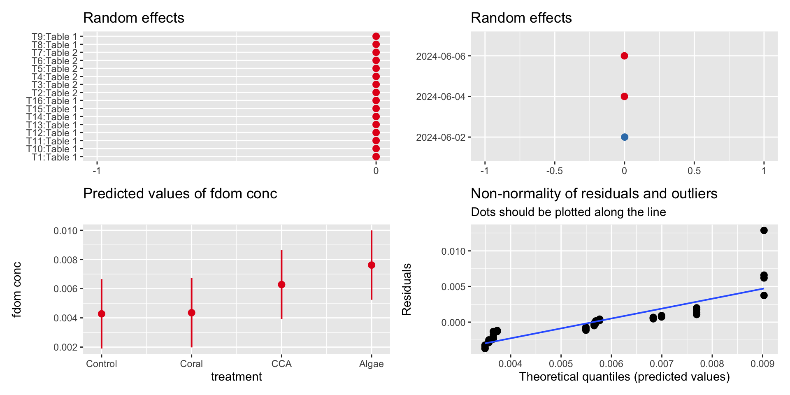
resid_panel(mod)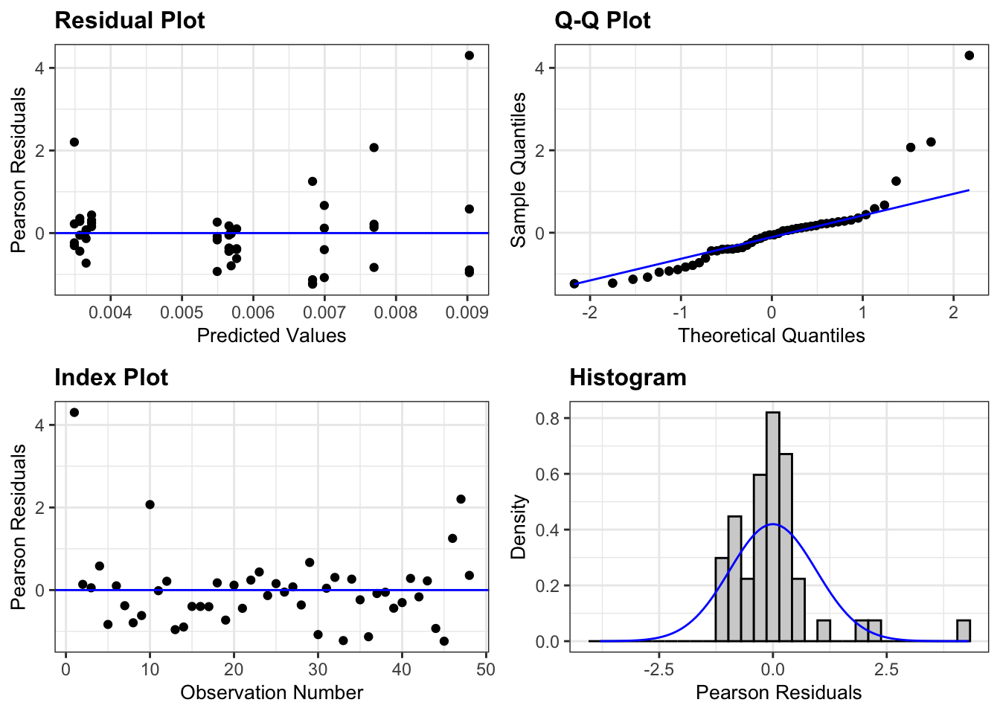
emmeans(mod, specs = trt.vs.ctrl ~ treatment)$emmeans
treatment emmean SE df lower.CL upper.CL
Control 0.00428 0.00127 4.41 0.000866 0.00769
Coral 0.00436 0.00118 4.63 0.001249 0.00746
CCA 0.00628 0.00118 4.63 0.003174 0.00939
Algae 0.00762 0.00127 4.41 0.004206 0.01103
Degrees-of-freedom method: kenward-roger
Confidence level used: 0.95
$contrasts
contrast estimate SE df t.ratio p.value
Coral - Control 7.69e-05 0.00131 11.7 0.059 0.9987
CCA - Control 2.00e-03 0.00131 11.7 1.524 0.3423
Algae - Control 3.34e-03 0.00122 11.0 2.732 0.0508
Degrees-of-freedom method: kenward-roger
P value adjustment: dunnettx method for 3 tests sort(boxplot.stats(fDOM_12PM_cobC$fdom_conc)$out)[1] 0.01008581 0.01057877 0.01077138 0.01389198 0.02190937ggplot(fDOM_12PM_cobC, aes(x= treatment, y = fdom_conc, fill = fdom))+
geom_boxplot()+
geom_jitter(aes(color = treatment), alpha = 0.5)+
geom_text_repel(aes(label = tank_number), alpha = 0.4)+
facet_grid(fdom_cat~date, scales = "free")+
nunu_themeWarning: ggrepel: 1 unlabeled data points (too many overlaps). Consider
increasing max.overlaps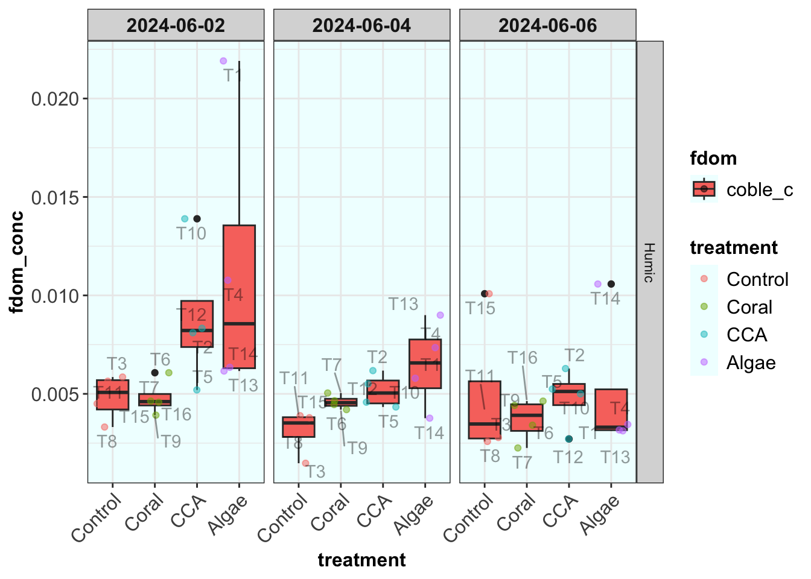
M:C
fDOM_12PM_mtoc <- fDOM_12PM %>% filter(fdom == "m_to_c") mod <- lmer(fdom_conc ~ treatment + (1|date)+ (1|inflow_table/tank_number), data = fDOM_12PM_mtoc)
summary(mod)Linear mixed model fit by REML. t-tests use Satterthwaite's method [
lmerModLmerTest]
Formula: fdom_conc ~ treatment + (1 | date) + (1 | inflow_table/tank_number)
Data: fDOM_12PM_mtoc
REML criterion at convergence: -59.2
Scaled residuals:
Min 1Q Median 3Q Max
-2.2868 -0.5601 -0.1069 0.8310 1.4298
Random effects:
Groups Name Variance Std.Dev.
tank_number:inflow_table (Intercept) 4.407e-04 0.020992
date (Intercept) 2.449e-03 0.049487
inflow_table (Intercept) 2.373e-05 0.004871
Residual 1.100e-02 0.104876
Number of obs: 48, groups:
tank_number:inflow_table, 16; date, 3; inflow_table, 2
Fixed effects:
Estimate Std. Error df t value Pr(>|t|)
(Intercept) 0.45598 0.04310 4.73032 10.579 0.000180 ***
treatmentCoral 0.08654 0.04535 11.63170 1.908 0.081324 .
treatmentCCA 0.16838 0.04535 11.63170 3.713 0.003120 **
treatmentAlgae 0.21337 0.04532 10.99879 4.709 0.000641 ***
---
Signif. codes: 0 '***' 0.001 '**' 0.01 '*' 0.05 '.' 0.1 ' ' 1
Correlation of Fixed Effects:
(Intr) trtmnC trtCCA
treatmntCrl -0.527
treatmntCCA -0.527 0.501
treatmntAlg -0.526 0.500 0.500plot_model(mod, type = "re")[[1]] + ylim(-0.1,0.1) +
plot_model(mod, type = "re")[[2]] + ylim(-0.15,0.15)+
plot_model(mod, type = "eff", terms = c('treatment')) +
plot_model(mod, type = "diag")[[1]]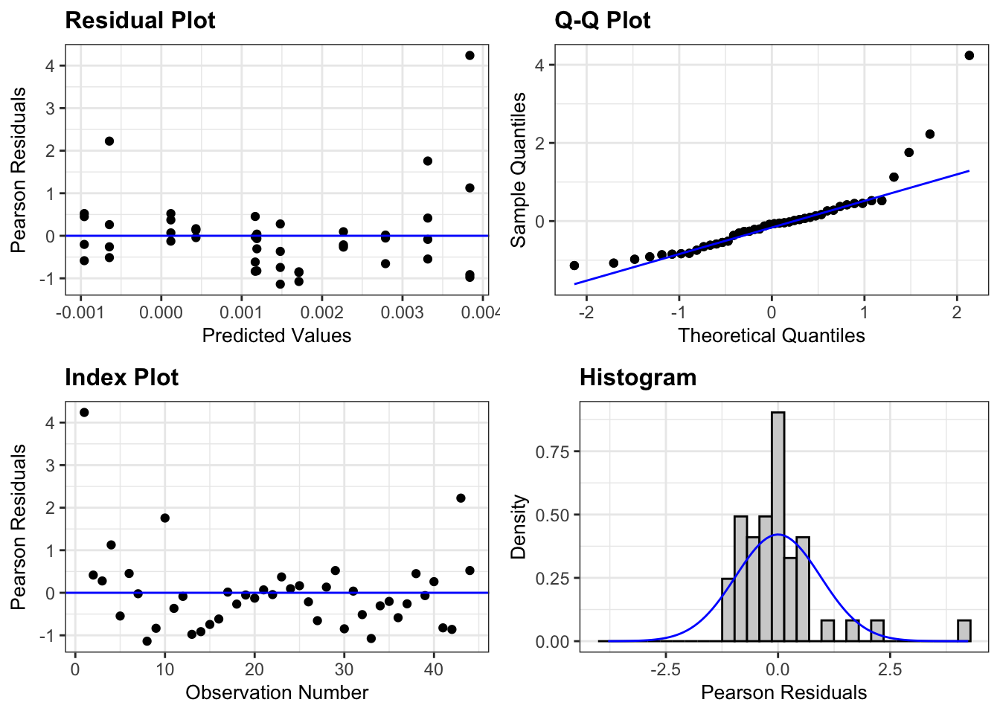
resid_panel(mod)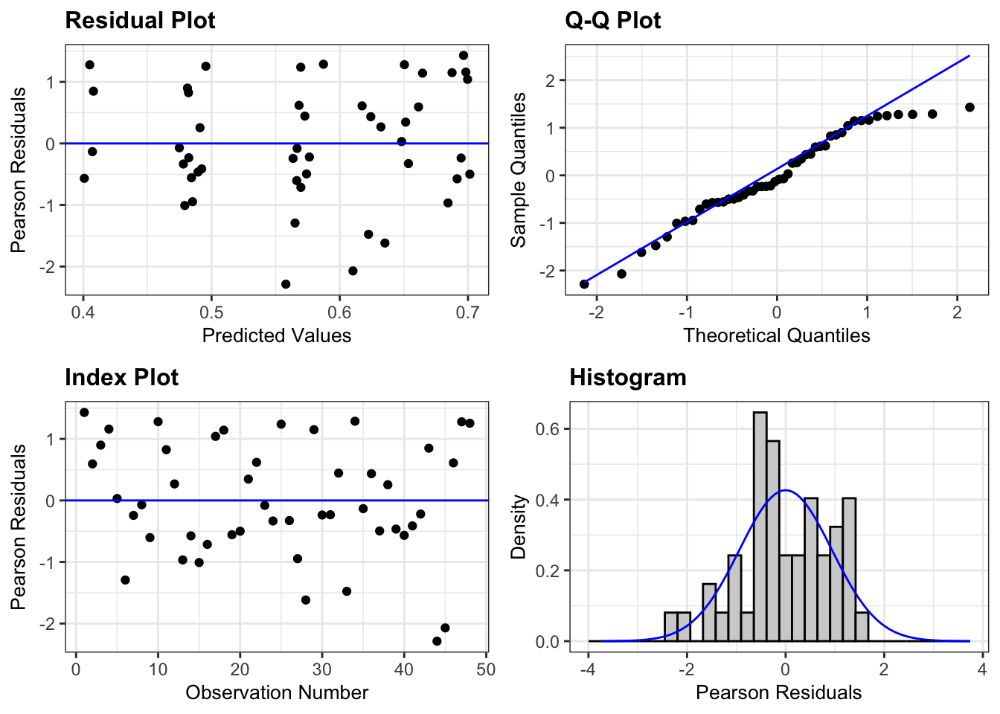
emmeans(mod, specs = trt.vs.ctrl ~ treatment)$emmeans
treatment emmean SE df lower.CL upper.CL
Control 0.456 0.0465 4.73 0.334 0.578
Coral 0.543 0.0431 4.98 0.432 0.653
CCA 0.624 0.0431 4.98 0.514 0.735
Algae 0.669 0.0465 4.73 0.548 0.791
Degrees-of-freedom method: kenward-roger
Confidence level used: 0.95
$contrasts
contrast estimate SE df t.ratio p.value
Coral - Control 0.0865 0.0486 11.6 1.780 0.2372
CCA - Control 0.1684 0.0486 11.6 3.463 0.0132
Algae - Control 0.2134 0.0453 11.0 4.709 0.0018
Degrees-of-freedom method: kenward-roger
P value adjustment: dunnettx method for 3 tests #sort(boxplot.stats(fDOM_12PM_cobC$fdom_conc)$out)
ggplot(fDOM_12PM_mtoc, aes(x= treatment, y = fdom_conc, fill = fdom))+
geom_boxplot()+
geom_jitter(aes(color = treatment), alpha = 0.5)+
geom_text_repel(aes(label = tank_number), alpha = 0.4)+
facet_grid(fdom_cat~date, scales = "free")+
nunu_theme(ggplot(fDOM_12PM_cobM, aes(x= treatment, y = fdom_conc))+
geom_boxplot(fill = "cornflowerblue")+
#geom_jitter(aes(color = treatment), alpha = 0.5)+
#geom_text_repel(aes(label = tank_number), alpha = 0.4)+
ylim(0,0.02)+
labs(title = "cobleM")+
#facet_grid(~date)+
nunu_theme ) +
(ggplot(fDOM_12PM_cobC, aes(x= treatment, y = fdom_conc))+
geom_boxplot(fill = "chartreuse3")+
#geom_jitter(aes(color = treatment), alpha = 0.5)+
#geom_text_repel(aes(label = tank_number), alpha = 0.4)+
ylim(0,0.02)+
labs(title = "cobleC")+
#facet_grid(~date)+
nunu_theme ) +
(ggplot(fDOM_12PM_mtoc, aes(x= treatment, y = fdom_conc))+
geom_boxplot( fill = "yellow")+
#geom_jitter(aes(color = treatment), alpha = 0.5)+
#geom_text_repel(aes(label = tank_number), alpha = 0.4)+
#facet_grid(~date)+
labs(title = "M:C")+
nunu_theme ) Warning: Removed 1 row containing non-finite outside the scale range (`stat_boxplot()`).
Removed 1 row containing non-finite outside the scale range (`stat_boxplot()`).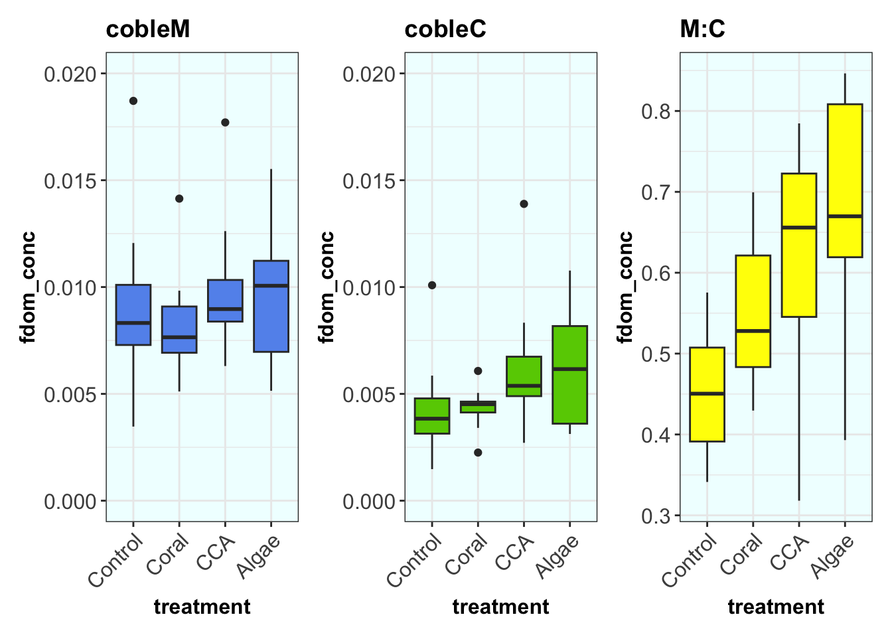
FI
fDOM_12PM_fi <- fDOM_12PM %>% filter(fdom == "fi") mod <- lmer(fdom_conc ~ treatment + (1|date)+ (1|inflow_table/tank_number), data = fDOM_12PM_fi)
summary(mod)Linear mixed model fit by REML. t-tests use Satterthwaite's method [
lmerModLmerTest]
Formula: fdom_conc ~ treatment + (1 | date) + (1 | inflow_table/tank_number)
Data: fDOM_12PM_fi
REML criterion at convergence: 18.8
Scaled residuals:
Min 1Q Median 3Q Max
-1.67285 -0.52328 -0.07147 0.48365 2.09812
Random effects:
Groups Name Variance Std.Dev.
tank_number:inflow_table (Intercept) 0.0250861 0.15839
date (Intercept) 0.0223416 0.14947
inflow_table (Intercept) 0.0006236 0.02497
Residual 0.0507148 0.22520
Number of obs: 48, groups:
tank_number:inflow_table, 16; date, 3; inflow_table, 2
Fixed effects:
Estimate Std. Error df t value Pr(>|t|)
(Intercept) 1.90236 0.13538 5.95209 14.052 8.65e-06 ***
treatmentCoral 0.03516 0.14514 11.60334 0.242 0.813
treatmentCCA 0.02569 0.14514 11.60334 0.177 0.863
treatmentAlgae -0.14564 0.14490 10.99967 -1.005 0.336
---
Signif. codes: 0 '***' 0.001 '**' 0.01 '*' 0.05 '.' 0.1 ' ' 1
Correlation of Fixed Effects:
(Intr) trtmnC trtCCA
treatmntCrl -0.538
treatmntCCA -0.538 0.502
treatmntAlg -0.535 0.499 0.499plot_model(mod, type = "re")[[1]] +
plot_model(mod, type = "re")[[2]] +
plot_model(mod, type = "eff", terms = c('treatment')) +
plot_model(mod, type = "diag")[[1]]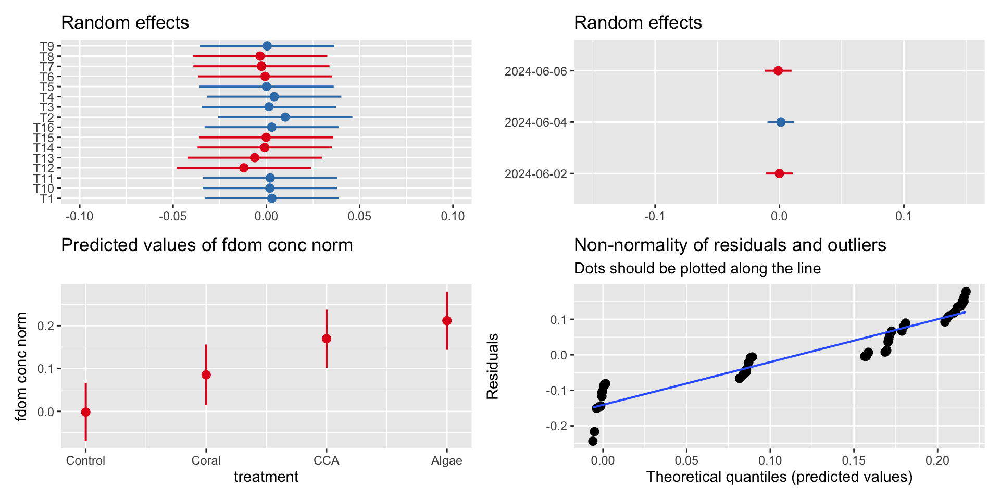
resid_panel(mod)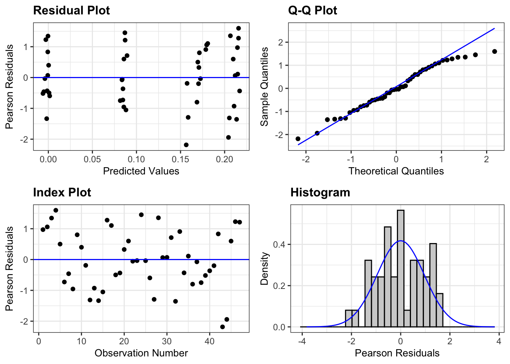
emmeans(mod, specs = trt.vs.ctrl ~ treatment)$emmeans
treatment emmean SE df lower.CL upper.CL
Control 1.90 0.146 5.95 1.54 2.26
Coral 1.94 0.135 6.38 1.61 2.26
CCA 1.93 0.135 6.38 1.60 2.25
Algae 1.76 0.146 5.95 1.40 2.11
Degrees-of-freedom method: kenward-roger
Confidence level used: 0.95
$contrasts
contrast estimate SE df t.ratio p.value
Coral - Control 0.0352 0.155 11.6 0.227 0.9796
CCA - Control 0.0257 0.155 11.6 0.166 0.9893
Algae - Control -0.1456 0.145 11.0 -1.005 0.6286
Degrees-of-freedom method: kenward-roger
P value adjustment: dunnettx method for 3 tests #sort(boxplot.stats(fDOM_12PM_cobC$fdom_conc)$out)
ggplot(fDOM_12PM_fi, aes(x= treatment, y = fdom_conc, fill = fdom))+
geom_boxplot()+
geom_jitter(aes(color = treatment), alpha = 0.5)+
geom_text_repel(aes(label = tank_number), alpha = 0.4)+
facet_grid(fdom_cat~date, scales = "free")+
nunu_theme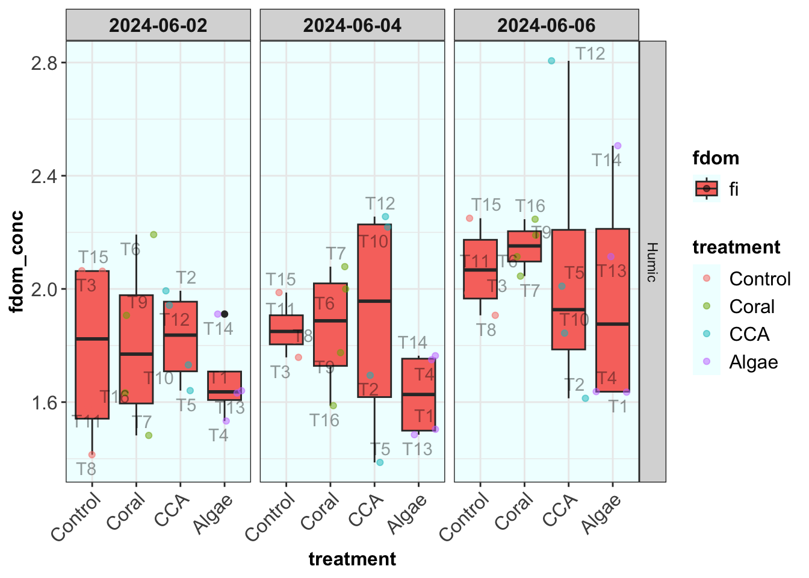
BIX
fDOM_12PM_bix <- fDOM_12PM %>% filter(fdom == "bix") mod <- lmer(fdom_conc ~ treatment + (1|date)+ (1|inflow_table/tank_number), data = fDOM_12PM_bix)
summary(mod)Linear mixed model fit by REML. t-tests use Satterthwaite's method [
lmerModLmerTest]
Formula: fdom_conc ~ treatment + (1 | date) + (1 | inflow_table/tank_number)
Data: fDOM_12PM_bix
REML criterion at convergence: 11.3
Scaled residuals:
Min 1Q Median 3Q Max
-1.6243 -0.6494 -0.1733 0.6039 2.8187
Random effects:
Groups Name Variance Std.Dev.
tank_number:inflow_table (Intercept) 0.001035 0.03218
date (Intercept) 0.046108 0.21473
inflow_table (Intercept) 0.000000 0.00000
Residual 0.052537 0.22921
Number of obs: 48, groups:
tank_number:inflow_table, 16; date, 3; inflow_table, 2
Fixed effects:
Estimate Std. Error df t value Pr(>|t|)
(Intercept) 0.76164 0.14144 2.91385 5.385 0.0135 *
treatmentCoral 0.12469 0.09630 12.00006 1.295 0.2197
treatmentCCA 0.06408 0.09630 12.00006 0.665 0.5184
treatmentAlgae 0.10012 0.09630 12.00006 1.040 0.3190
---
Signif. codes: 0 '***' 0.001 '**' 0.01 '*' 0.05 '.' 0.1 ' ' 1
Correlation of Fixed Effects:
(Intr) trtmnC trtCCA
treatmntCrl -0.340
treatmntCCA -0.340 0.500
treatmntAlg -0.340 0.500 0.500
optimizer (nloptwrap) convergence code: 0 (OK)
boundary (singular) fit: see help('isSingular')plot_model(mod, type = "re")[[1]] +
plot_model(mod, type = "re")[[2]] +
plot_model(mod, type = "eff", terms = c('treatment')) +
plot_model(mod, type = "diag")[[1]]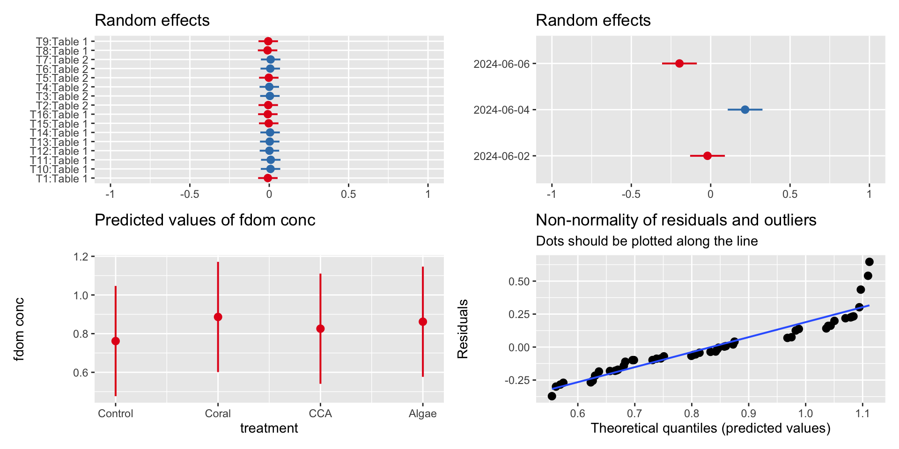
resid_panel(mod)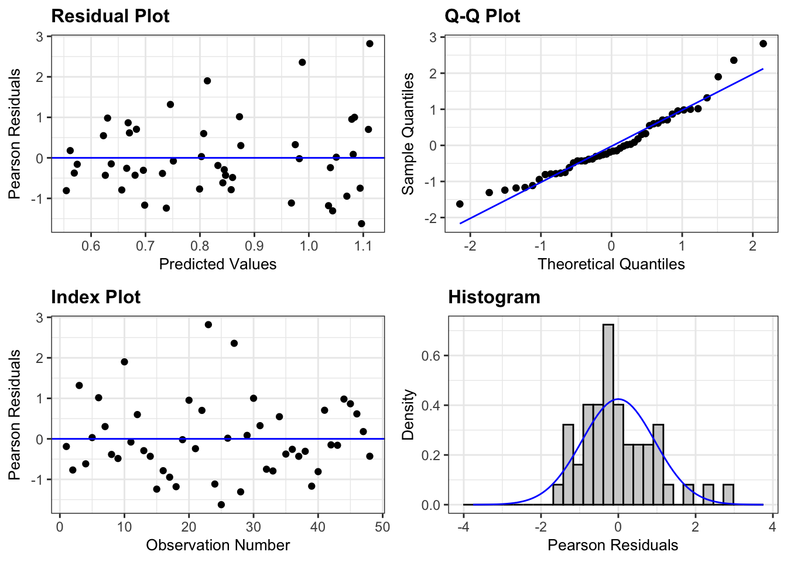
emmeans(mod, specs = trt.vs.ctrl ~ treatment)$emmeans
treatment emmean SE df lower.CL upper.CL
Control 0.762 0.146 2.88 0.284 1.24
Coral 0.886 0.141 2.89 0.427 1.35
CCA 0.826 0.141 2.89 0.366 1.29
Algae 0.862 0.146 2.88 0.384 1.34
Degrees-of-freedom method: kenward-roger
Confidence level used: 0.95
$contrasts
contrast estimate SE df t.ratio p.value
Coral - Control 0.1247 0.1040 11.7 1.204 0.5098
CCA - Control 0.0641 0.1040 11.7 0.619 0.8444
Algae - Control 0.1001 0.0963 11.0 1.040 0.6080
Degrees-of-freedom method: kenward-roger
P value adjustment: dunnettx method for 3 tests #sort(boxplot.stats(fDOM_12PM_cobC$fdom_conc)$out)
ggplot(fDOM_12PM_bix, aes(x= treatment, y = fdom_conc, fill = fdom))+
geom_boxplot()+
geom_jitter(aes(color = treatment), alpha = 0.5)+
geom_text_repel(aes(label = tank_number), alpha = 0.4)+
facet_grid(fdom_cat~date, scales = "free")+
nunu_theme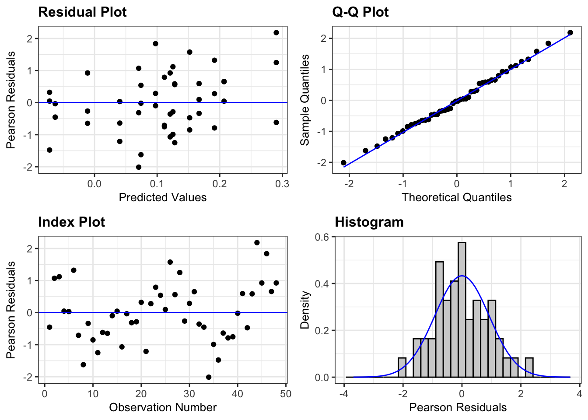
HIX
fDOM_12PM_hix <- fDOM_12PM %>% filter(fdom == "hix") mod <- lmer(fdom_conc ~ treatment + (1|date)+ (1|inflow_table/tank_number), data = fDOM_12PM_hix)
summary(mod)Linear mixed model fit by REML. t-tests use Satterthwaite's method [
lmerModLmerTest]
Formula: fdom_conc ~ treatment + (1 | date) + (1 | inflow_table/tank_number)
Data: fDOM_12PM_hix
REML criterion at convergence: -74.9
Scaled residuals:
Min 1Q Median 3Q Max
-1.8355 -0.5076 0.0424 0.5004 3.0690
Random effects:
Groups Name Variance Std.Dev.
tank_number:inflow_table (Intercept) 0.001088 0.03298
date (Intercept) 0.002988 0.05466
inflow_table (Intercept) 0.000000 0.00000
Residual 0.006989 0.08360
Number of obs: 48, groups:
tank_number:inflow_table, 16; date, 3; inflow_table, 2
Fixed effects:
Estimate Std. Error df t value Pr(>|t|)
(Intercept) 0.36940 0.04302 4.80121 8.587 0.000431 ***
treatmentCoral -0.03060 0.04134 12.00014 -0.740 0.473424
treatmentCCA 0.03677 0.04134 12.00014 0.890 0.391212
treatmentAlgae 0.03707 0.04134 12.00014 0.897 0.387449
---
Signif. codes: 0 '***' 0.001 '**' 0.01 '*' 0.05 '.' 0.1 ' ' 1
Correlation of Fixed Effects:
(Intr) trtmnC trtCCA
treatmntCrl -0.480
treatmntCCA -0.480 0.500
treatmntAlg -0.480 0.500 0.500
optimizer (nloptwrap) convergence code: 0 (OK)
boundary (singular) fit: see help('isSingular')plot_model(mod, type = "re")[[1]] +
plot_model(mod, type = "re")[[2]] +
plot_model(mod, type = "eff", terms = c('treatment')) +
plot_model(mod, type = "diag")[[1]]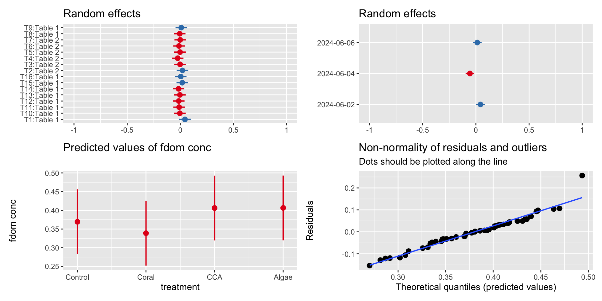
resid_panel(mod)
emmeans(mod, specs = trt.vs.ctrl ~ treatment)$emmeans
treatment emmean SE df lower.CL upper.CL
Control 0.369 0.046 4.43 0.246 0.492
Coral 0.339 0.043 4.59 0.225 0.452
CCA 0.406 0.043 4.59 0.293 0.520
Algae 0.406 0.046 4.43 0.283 0.529
Degrees-of-freedom method: kenward-roger
Confidence level used: 0.95
$contrasts
contrast estimate SE df t.ratio p.value
Coral - Control -0.0306 0.0444 11.7 -0.688 0.8092
CCA - Control 0.0368 0.0444 11.7 0.827 0.7326
Algae - Control 0.0371 0.0413 11.0 0.897 0.6928
Degrees-of-freedom method: kenward-roger
P value adjustment: dunnettx method for 3 tests #sort(boxplot.stats(fDOM_12PM_cobC$fdom_conc)$out)
ggplot(fDOM_12PM_hix, aes(x= treatment, y = fdom_conc, fill = fdom))+
geom_boxplot()+
geom_jitter(aes(color = treatment), alpha = 0.5)+
geom_text_repel(aes(label = tank_number), alpha = 0.4)+
facet_grid(fdom_cat~date, scales = "free")+
nunu_theme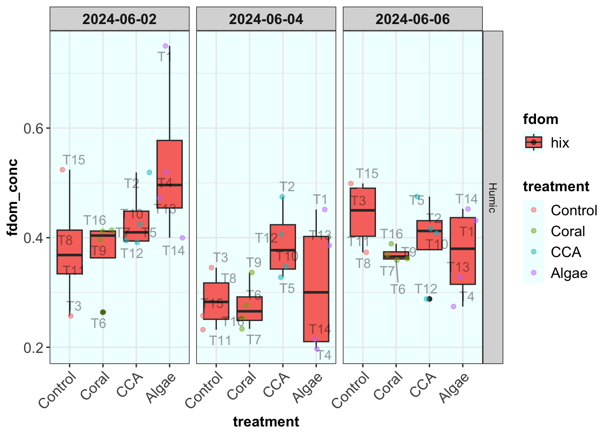
Proteinaceous
CobleB
fDOM_12PM_prot <- fDOM_12PM %>% filter(fdom == "fpeak") mod <- lmer(fdom_conc ~ treatment + (1|date)+ (1|inflow_table/tank_number), data = fDOM_12PM_prot)
summary(mod)Linear mixed model fit by REML. t-tests use Satterthwaite's method [
lmerModLmerTest]
Formula: fdom_conc ~ treatment + (1 | date) + (1 | inflow_table/tank_number)
Data: fDOM_12PM_prot
REML criterion at convergence: -216.4
Scaled residuals:
Min 1Q Median 3Q Max
-1.7291 -0.5097 -0.1106 0.3558 2.3471
Random effects:
Groups Name Variance Std.Dev.
tank_number:inflow_table (Intercept) 2.317e-05 0.004813
date (Intercept) 6.824e-05 0.008261
inflow_table (Intercept) 2.376e-06 0.001542
Residual 3.004e-04 0.017331
Number of obs: 48, groups:
tank_number:inflow_table, 16; date, 3; inflow_table, 2
Fixed effects:
Estimate Std. Error df t value Pr(>|t|)
(Intercept) 0.029275 0.007417 5.028830 3.947 0.0108 *
treatmentCoral -0.002834 0.007868 11.590035 -0.360 0.7252
treatmentCCA -0.006526 0.007868 11.590035 -0.829 0.4236
treatmentAlgae 0.003245 0.007851 11.000520 0.413 0.6873
---
Signif. codes: 0 '***' 0.001 '**' 0.01 '*' 0.05 '.' 0.1 ' ' 1
Correlation of Fixed Effects:
(Intr) trtmnC trtCCA
treatmntCrl -0.533
treatmntCCA -0.533 0.502
treatmntAlg -0.529 0.499 0.499plot_model(mod, type = "re")[[1]] +
plot_model(mod, type = "re")[[2]] +
plot_model(mod, type = "eff", terms = c('treatment')) +
plot_model(mod, type = "diag")[[1]]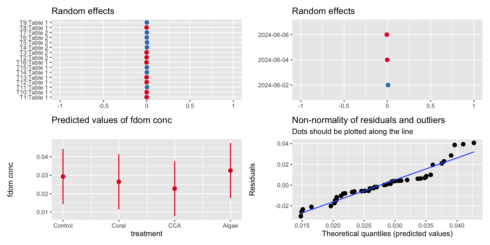
resid_panel(mod)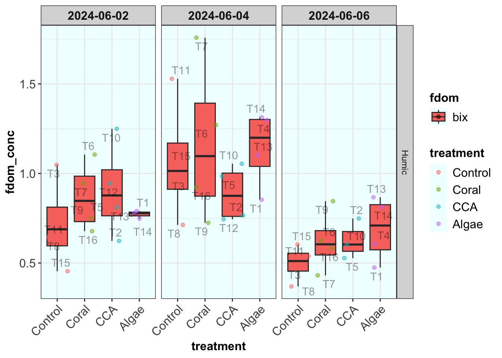
emmeans(mod, specs = trt.vs.ctrl ~ treatment)$emmeans
treatment emmean SE df lower.CL upper.CL
Control 0.0293 0.00797 5.03 0.00883 0.0497
Coral 0.0264 0.00740 5.30 0.00774 0.0451
CCA 0.0227 0.00740 5.30 0.00405 0.0415
Algae 0.0325 0.00797 5.03 0.01207 0.0530
Degrees-of-freedom method: kenward-roger
Confidence level used: 0.95
$contrasts
contrast estimate SE df t.ratio p.value
Coral - Control -0.00283 0.00839 11.6 -0.338 0.9538
CCA - Control -0.00653 0.00839 11.6 -0.778 0.7607
Algae - Control 0.00325 0.00785 11.0 0.413 0.9304
Degrees-of-freedom method: kenward-roger
P value adjustment: dunnettx method for 3 tests emmeans(mod, specs = pairwise~ treatment)$emmeans
treatment emmean SE df lower.CL upper.CL
Control 0.0293 0.00797 5.03 0.00883 0.0497
Coral 0.0264 0.00740 5.30 0.00774 0.0451
CCA 0.0227 0.00740 5.30 0.00405 0.0415
Algae 0.0325 0.00797 5.03 0.01207 0.0530
Degrees-of-freedom method: kenward-roger
Confidence level used: 0.95
$contrasts
contrast estimate SE df t.ratio p.value
Control - Coral 0.00283 0.00839 11.6 0.338 0.9860
Control - CCA 0.00653 0.00839 11.6 0.778 0.8629
Control - Algae -0.00325 0.00785 11.0 -0.413 0.9750
Coral - CCA 0.00369 0.00785 11.0 0.470 0.9641
Coral - Algae -0.00608 0.00839 11.6 -0.725 0.8853
CCA - Algae -0.00977 0.00839 11.6 -1.165 0.6592
Degrees-of-freedom method: kenward-roger
P value adjustment: tukey method for comparing a family of 4 estimates #sort(boxplot.stats(fDOM_12PM_cobC$fdom_conc)$out)
ggplot(fDOM_12PM_prot, aes(x= treatment, y = fdom_conc, fill = fdom))+
geom_boxplot()+
geom_jitter(aes(color = treatment), alpha = 0.5)+
geom_text_repel(aes(label = tank_number), alpha = 0.4)+
facet_grid(fdom_cat~date, scales = "free")+
nunu_theme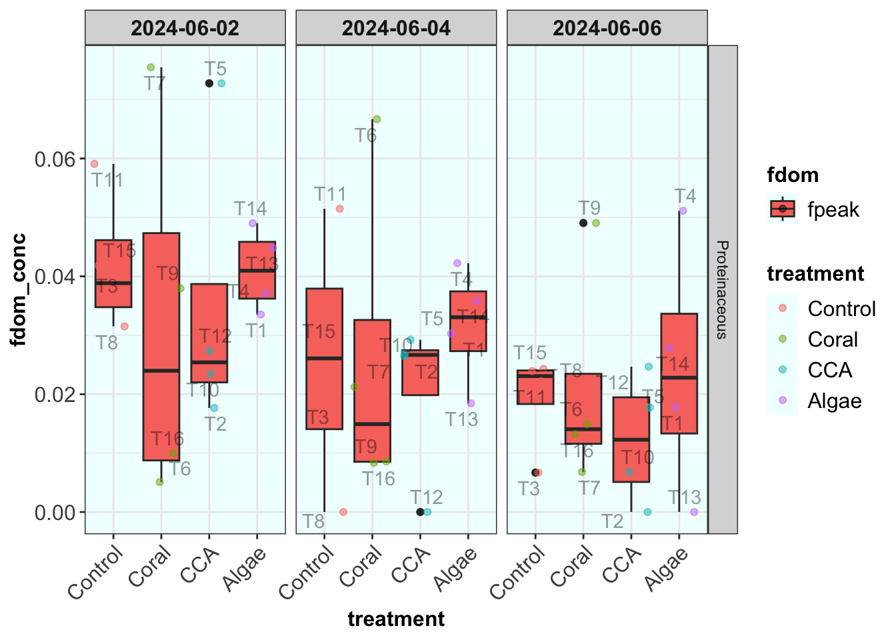